Clash of Clans Hero Equipment
Updated: 26 August 2026 · By the Goblins Farm team
All 42 pieces of hero equipment, grouped by hero, with the ability each one grants and the ore every level costs.
Barbarian King
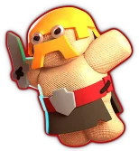
Barbarian PuppetCommon Barbarian King equipment, 18 levels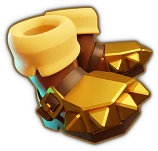
Earthquake BootsCommon Barbarian King equipment, 18 levels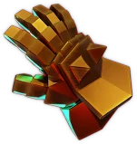
Giant GauntletEpic Barbarian King equipment, 27 levels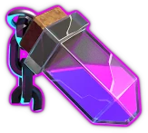
Rage VialCommon Barbarian King equipment, 18 levels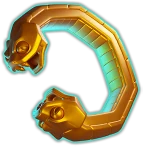
Snake BraceletEpic Barbarian King equipment, 27 levels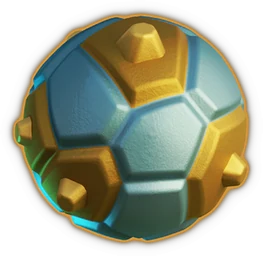
Spiky BallEpic Barbarian King equipment, 27 levels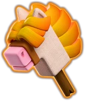
Stick HorseEpic Barbarian King equipment, 27 levels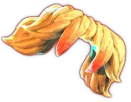
VampstacheCommon Barbarian King equipment, 18 levelsArcher Queen
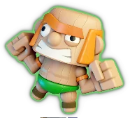
Action FigureEpic Archer Queen equipment, 27 levels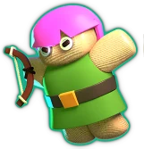
Archer PuppetCommon Archer Queen equipment, 18 levels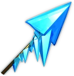
Frozen ArrowEpic Archer Queen equipment, 27 levels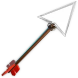
Giant ArrowCommon Archer Queen equipment, 18 levels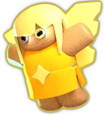
Healer PuppetCommon Archer Queen equipment, 18 levels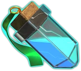
Invisibility VialCommon Archer Queen equipment, 18 levels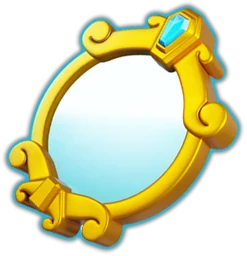
Magic MirrorEpic Archer Queen equipment, 27 levels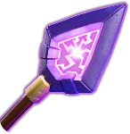
Monolith ArrowEpic Archer Queen equipment, 27 levelsMinion Prince
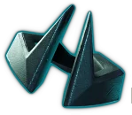
Dark CrownEpic Minion Prince equipment, 27 levels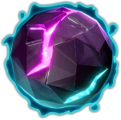
Dark OrbCommon Minion Prince equipment, 18 levels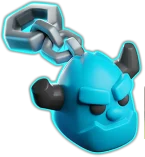
Henchmen PuppetCommon Minion Prince equipment, 18 levels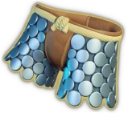
Metal PantsCommon Minion Prince equipment, 18 levels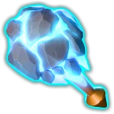
Meteor StaffEpic Minion Prince equipment, 27 levels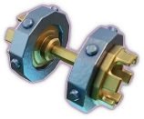
Noble IronCommon Minion Prince equipment, 18 levelsGrand Warden
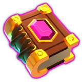
Eternal TomeCommon Grand Warden equipment, 18 levels FireballEpic Grand Warden equipment, 27 levels
FireballEpic Grand Warden equipment, 27 levels
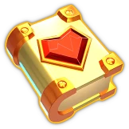
Healing TomeCommon Grand Warden equipment, 18 levels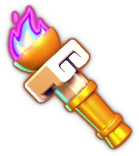
Heroic TorchEpic Grand Warden equipment, 27 levels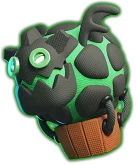
Lavaloon PuppetEpic Grand Warden equipment, 27 levels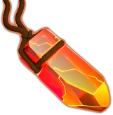
Life GemCommon Grand Warden equipment, 18 levels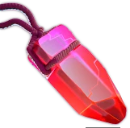
Rage GemCommon Grand Warden equipment, 18 levelsRoyal Champion
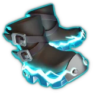
Electro BootsEpic Royal Champion equipment, 27 levels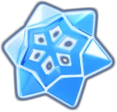
Frost FlakeEpic Royal Champion equipment, 27 levels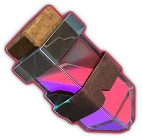
Haste VialCommon Royal Champion equipment, 18 levels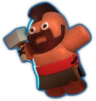
Hog Rider PuppetCommon Royal Champion equipment, 18 levels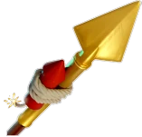
Rocket SpearEpic Royal Champion equipment, 27 levels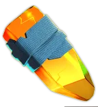
Royal GemCommon Royal Champion equipment, 18 levels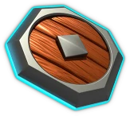
Seeking ShieldCommon Royal Champion equipment, 18 levelsDragon Duke
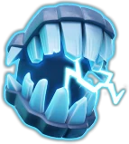
Electro FangsCommon Dragon Duke equipment, 18 levels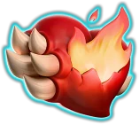
Fire HeartCommon Dragon Duke equipment, 18 levels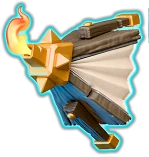
Flame BlowerCommon Dragon Duke equipment, 18 levels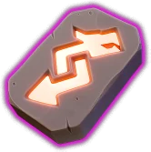
Revenge DeckEpic Dragon Duke equipment, 27 levels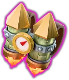
Rocket BackpackEpic Dragon Duke equipment, 27 levels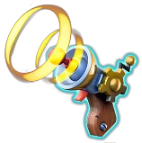
Stun BlasterCommon Dragon Duke equipment, 18 levelsGoblins Farm is not affiliated with, endorsed by, sponsored by, or specifically approved by Supercell. Clash of Clans is a trademark of Supercell Oy. This material is unofficial fan content produced under Supercell's Fan Content Policy. Game values change with every update; always verify in-game before committing an upgrade.